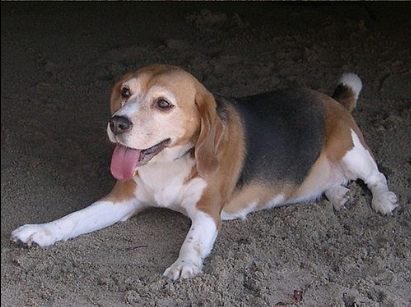
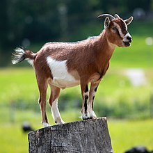
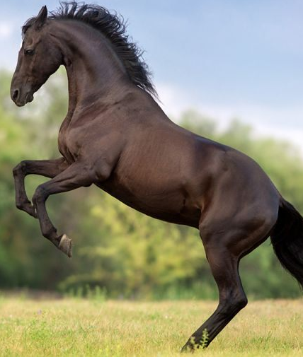

The cat is a small carnivorous mammal. It is the only domesticated species in the family Felidae and often referred to as the domestic cat to distinguish it from wild members of the family. The cat is either a house cat, a farm cat or a feral cat; the latter ranges freely and avoids human contact. Domestic cats are valued by humans for companionship and for their ability to hunt rodents. About 60 cat breeds are recognized by various cat registries.
Dog

The domestic dog (Canis familiaris when considered a distinct species or Canis lupus familiaris when considered a subspecies of the wolf) is a member of the genus Canis (canines), which forms part of the wolf-like canids, and is the most widely abundant terrestrial carnivore.The dog and the extant gray wolf are sister taxa as modern wolves are not closely related to the wolves that were first domesticated, which implies that the direct ancestor of the dog is extinct. The dog was the first species to be domesticated,and has been selectively bred over millennia for various behaviors, sensory capabilities, and physical attributes
Goat

The domestic goat or simply goat (Capra aegagrus hircus) is a subspecies of C. aegagrus domesticated from the wild goat of Southwest Asia and Eastern Europe. The goat is a member of the animal family Bovidae and the subfamily Caprinae, meaning it is closely related to the sheep. There are over 300 distinct breeds of goat.Goats are one of the oldest domesticated species of animal, and have been used for milk, meat, fur and skins across much of the world.Milk from goats is often turned into goat cheese.
Horse

The horse (Equus ferus caballus) is one of two extant subspecies of Equus ferus. It is an odd-toed ungulate mammal belonging to the taxonomic family Equidae. The horse has evolved over the past 45 to 55 million years from a small multi-toed creature, Eohippus, into the large, single-toed animal of today. Humans began domesticating horses around 4000 BC, and their domestication is believed to have been widespread by 3000 BC. Horses in the subspecies caballus are domesticated, although some domesticated populations live in the wild as feral horses.
Parrot
Parrots, also known as psittacines /ˈsɪtəsaɪnz/,are birds of the roughly 393 species in 92 genera comprising the order Psittaciformes, found mostly in tropical and subtropical regions. The order is subdivided into three superfamilies: the Psittacoidea ("true" parrots), the Cacatuoidea (cockatoos), and the Strigopoidea (New Zealand parrots). Parrots have a generally pantropical distribution with several species inhabiting temperate regions in the Southern Hemisphere, as well. The greatest diversity of parrots is in South America and Australasia.